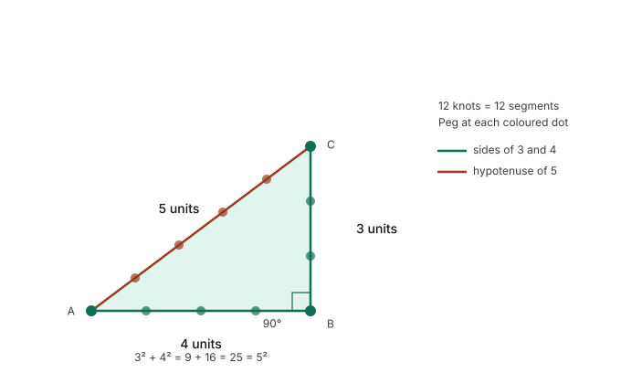

Every year, without fail, the Nile rises.
It begins in June, fed by the summer rains on the Ethiopian plateau far to the south. The river swells, darkens, and begins to climb its banks. By July it is moving fast and brown, carrying with it the rich sediment of highland Africa. By August, in the years before the Aswan Dam changed everything, the Delta was gone — not flooded in the cautious sense of water spilling over an edge, but submerged, transformed into a shallow inland sea stretching from the desert cliffs to the east and west as far as any farmer’s eye could reach. The villages sat on their raised mounds like islands. The fields, the paths between fields, the boundary markers, the ditches, the irrigation channels — all of it was under brown water, invisible.
Then, in October, the river pulled back.
What it left behind was black and glistening: a fresh layer of the richest agricultural soil on earth, deposited uniformly across the floodplain, renewing the land’s fertility the way nothing else could. The Egyptians called this soil kemet — the black land — and they called the desert on either side deshret, the red land. The black land was life. The red land was death. Between them, following the river for eight hundred miles from the First Cataract to the sea, the black land was also, every October without exception, a blank slate.
Every field boundary, gone. Every surveyor’s marker, washed away. Every record of who owned which strip of land, obliterated in the mud.
And so the work began again.
The Greek historian Herodotus, visiting Egypt in the fifth century BCE, recorded a tradition that the Egyptians themselves had about the origins of geometry. According to this tradition, it was the annual flooding of the Nile that forced the Egyptians to develop the science of land measurement — because every year, when the water retreated, the entire layout of the farmland had to be reconstructed from scratch, and the tax records had to be reconciled with whatever landscape the flood had left behind.
The word geometry is itself Greek — geo, earth; metria, measurement — but the Greeks freely acknowledged that they had inherited the discipline from Egypt. Aristotle, writing in the fourth century BCE, says that geometry arose in Egypt because of the leisure enjoyed by the priestly class there. Herodotus gives a more practical account: it was the flood, the necessity, the annual crisis that had to be solved. Later scholars mostly side with Herodotus.
The people who did this work were called harpedonaptai in Greek — rope stretchers. They were the professional surveyors of ancient Egypt, and their tool was as simple as it sounds: a length of rope, knotted at regular intervals, used to measure distances and construct angles in the freshly deposited silt. The rope was their ruler, their compass, and their set square all at once. With nothing more than knotted rope and a set of learned procedures, the harpedonaptai re-drew the map of Egypt every year.
This is the context in which Egyptian mathematics developed. Not in a library, not in a temple precinct devoted to abstract contemplation, but outside, in the mud, under the autumn sun, with a practical problem that had to be solved before the planting season began and whose solution had direct legal and economic consequences for every farmer in the country.
If you drew the boundary in the wrong place, you were stealing your neighbour’s land. If you calculated the area of a field incorrectly, the tax assessment was wrong. If the irrigation channels were poorly aligned, the water distribution failed and crops died. The harpedonaptai were, in a real sense, the most practically important mathematicians in the ancient world. Their errors had immediate human costs.
The fundamental challenge of land surveying is constructing a right angle — a perfect ninety degrees — in the open field. On paper or parchment, this is trivial: you use a set square. In a muddy field after a flood, with no rigid surfaces and no precision instruments, it requires a different approach.
The harpedonaptai used their knotted ropes to construct the 3-4-5 triangle.
We met this triangle in the last chapter, in the context of Babylonian mathematics: a right-angled triangle whose sides are in the ratio 3:4:5 satisfies the Pythagorean relationship, because 9 + 16 = 25. The angle between the sides of length 3 and 4 is exactly ninety degrees. This means that if you take a rope knotted into twelve equal segments and peg it into the ground forming a triangle with sides of 3, 4, and 5 segments, the corner between the 3-segment side and the 4-segment side is a perfect right angle.

With this technique, the rope stretchers could lay out a right angle anywhere — in a field, on a building site, in the desert. They could then use the right angle as the basis for a square or rectangle, measure its sides with the rope, and calculate its area. For a rectangle, the area is simply length times width. For more complex shapes, they broke them into rectangles and triangles, calculated each piece, and summed.
This is practical geometry at its most direct: a physical procedure that solves a physical problem. And it is worth pausing to appreciate the elegance of the 3-4-5 rope. It requires no understanding of why the method works. It requires no knowledge of the Pythagorean theorem as an abstract relationship. It only requires knowing that this particular rope, pegged out in this particular shape, always gives a right angle. The mathematics is embedded in the tool, and the tool works whether or not the person using it could explain the principle behind it.
This gap between knowing that and knowing why is one of the recurring themes we will keep meeting. The Babylonians knew that the 3-4-5 relationship gave a right angle. The Egyptians knew that too. Neither civilisation, as far as we can tell, asked why it worked — what the underlying mathematical reason was, what would happen with other triangles, whether there was a general principle. That question — why — would wait for the Greeks. But the rope stretched across the mud of the Nile Delta worked perfectly without it.
Around 1550 BCE, an Egyptian scribe named Ahmose copied out a mathematical text onto a roll of papyrus. He was not composing original work — he tells us so himself, in an introduction that is one of the most charming in the history of mathematics. He describes his text as a copy of an older work, itself dating from several centuries earlier, and he characterises it as offering “a thorough study of all things, insight into all that exists, knowledge of all obscure secrets.” This is advertising copy, essentially — the ancient equivalent of a dust-jacket blurb — but the text that follows it is a genuine and substantial piece of mathematical writing.
The papyrus survived because Egypt is dry, and dry conditions preserve organic material. It was purchased in Luxor in 1858 by a Scottish antiquarian named Alexander Henry Rhind — hence the name it now carries, the Rhind Papyrus — and it has been held in the British Museum since 1865. It is roughly six metres long when unrolled, and it contains eighty-four mathematical problems with worked solutions, covering arithmetic, fractions, geometry, and what we would now call simple algebra.
It is the fullest surviving window we have into the mathematical practice of ancient Egypt.
The first thing that strikes a modern reader about the Rhind Papyrus is how concrete it is. Every problem is a specific scenario: divide ten loaves of bread among ten men. A cylindrical granary has a diameter of nine cubits and a height of ten; what is its volume? A triangle has a base of four cubits and a height of ten; what is its area? There are no general formulas, no symbolic variables, no abstract statements. This is, in its texture, very similar to what we saw in the Babylonian tablets: mathematics as a collection of worked examples, a toolkit for specific situations.
But the Egyptian approach to fractions is quite different from the Babylonian, and it is worth understanding because it reveals something about how deeply the choice of a number system shapes mathematical thinking.
The Babylonians, as we saw, worked in base 60, and their fraction system was essentially what we would call a sexagesimal decimal — they could express fractions as sums of powers of 1/60, much as we express fractions as sums of powers of 1/10. This made fraction arithmetic relatively manageable.
The Egyptians worked in base 10, as we do, but their fraction system was radically different. With one exception (the fraction 2/3, which had its own special symbol), Egyptian mathematics expressed all fractions as unit fractions — fractions of the form 1/n, where n is a whole number. The fraction we would write as 3/4 was, to an Egyptian scribe, 1/2 + 1/4. The fraction 5/6 was 1/2 + 1/3. Every non-unit fraction had to be decomposed into a sum of distinct unit fractions — no repetition allowed, so you could not write 2/3 as 1/3 + 1/3.
This seems like a bizarre constraint, and it makes certain calculations remarkably cumbersome. Why would a sophisticated mathematical culture choose it?
The candid answer is that we are not entirely sure. Several explanations have been proposed. One is rooted in the practice of distribution: if you need to divide seven loaves among ten people, you can solve it by first giving each person 1/2 a loaf, then dividing the remaining two and a half loaves further, and so on — each step giving everyone an equal share of what remains. This naturally produces unit fractions. Another explanation is that the Egyptian multiplication algorithm, which was based on repeated doubling, worked smoothly with unit fractions in a way it did not with other fractions. A third, more speculative explanation is simply that the unit fraction system was established early, encoded in the scribal curriculum, and never challenged — it became the default because it was what everyone had been taught.
Whatever the reason, the constraint shaped Egyptian mathematics profoundly. The Rhind Papyrus begins with a table of decompositions: how to express 2/n as a sum of unit fractions, for every odd n from 3 to 101. This is not a trivial problem. Finding a decomposition of 2/97 into unit fractions — without using any fraction twice, and preferably using as few fractions as possible — requires genuine mathematical ingenuity. The scribe Ahmose (or his source) found that 2/97 = 1/56 + 1/679 + 1/776. You can verify this is correct. You can also verify that finding it requires either a systematic method or an extraordinary amount of trial and error.
This table was not an academic exercise. It was a practical reference tool — the ancient equivalent of a conversion table — that scribes consulted whenever they needed to work with fractions in the course of administrative calculations. The fact that so much effort went into constructing and memorising it tells us something about the texture of daily mathematical life in ancient Egypt: a world in which fractions were everywhere, computation was done by hand with a limited symbolic toolkit, and finding clever shortcuts was a professional virtue.
So far, Egyptian mathematics looks broadly similar in character to Babylonian: practical, concrete, procedural, oriented toward the problems of administration and commerce. And for most of its history, this description is fair. But Egypt produced one category of practical problem so extreme in its demands that solving it required geometry of a higher order entirely.
The pyramids.
The Great Pyramid of Giza was built around 2560 BCE, during the reign of Pharaoh Khufu. It is, even in its eroded modern form, a staggering object: 138 metres high (originally 147 metres, before the outer casing stones were removed in the Middle Ages), with a base length of 230 metres on each side, and a total volume of about 2.6 million cubic metres. Each of the roughly 2.3 million stone blocks weighs an average of 2.5 tonnes. The four sides of the base are aligned to the cardinal directions with an accuracy of better than 0.05 degrees. The four base angles are equal to within a few centimetres. The apex is directly above the centre of the base.
This was built, let us remember, around 4,500 years ago, by people with no steel tools, no surveying instruments in any modern sense, no calculating machines, and no written formulas for three-dimensional geometry that we know of.
The mathematics required to achieve this was not simple. First, the site had to be levelled — the base of a structure this size had to be flat to within a few centimetres, and the natural ground surface was not flat. Second, the right angles of the base had to be set out with extraordinary precision; a small error at the base would compound into a large error at the apex, hundreds of metres above. Third, the slope of the sides had to be consistent all the way up, so that the four triangular faces would meet at a single point. Fourth, the orientation had to be established and maintained.
The Egyptian mathematical concept central to the pyramid’s design is called the seked — a measure of the slope of a slanted surface expressed as the horizontal displacement per unit of vertical rise. Specifically, the seked was measured in palms per cubit of height (there were seven palms in a cubit), and it gave the builders a single number that encoded the angle of the pyramid’s face. A seked of 5.5 — five and a half palms for every cubit of height — corresponds to an angle of approximately 52 degrees, which is the slope of the Great Pyramid of Giza.
The Rhind Papyrus contains several problems about pyramids that use exactly this concept. Problem 56, for example: a pyramid has a base of 360 cubits and a height of 250 cubits. What is its seked? The answer, computed by the method given, is 5 palms and 1 finger (since there were four fingers in a palm). The calculation requires dividing half the base by the height — essentially computing the tangent of the slope angle — and expressing the result in the Egyptian unit system.
What is remarkable about this is not just the calculation itself, but the concept behind it. The seked is a recognition that a pyramid’s shape can be reduced to a single number — that two pyramids with the same seked will look identical, regardless of their size, because they have the same angle. This is, in embryonic form, the concept of trigonometry: the idea that angles can be characterised by ratios rather than by lengths, and that these ratios are consistent across scales. The Egyptians did not develop trigonometry as a general theory — that, again, would come later, in Greece and then in India and the Islamic world. But they had grasped the essential practical idea: the shape of a slope is a ratio, and the ratio is the useful number to work with.
The most mathematically impressive result in the Rhind Papyrus — and one that deserves to sit alongside the Babylonian Plimpton 322 as a demonstration of what pre-Greek mathematics could achieve — is the method given for finding the area of a circle.
Problem 50 of the Rhind Papyrus poses the question directly: a circular field has a diameter of 9 khet. What is its area?
The method given is: take the diameter, remove one ninth of it, and square the result.
In modern notation: if d is the diameter, the area is ((8/9)d)².
Let us check this against the correct formula. The correct area of a circle is π × r², where r is the radius, or equivalently (π/4) × d². The Egyptian method gives (8/9)² × d² = (64/81) × d². So the Egyptian approximation for π/4 is 64/81, which means their approximation for π is 256/81, or approximately 3.16.
The true value of π is approximately 3.14159. The Egyptian approximation of 3.16 is in error by less than one percent.
For a civilisation using knotted ropes and papyrus scrolls, computing areas in a muddy floodplain, an error of less than one percent is essentially perfect. The approximation is so good that for centuries scholars debated how the Egyptians arrived at it — whether they had some sophisticated theoretical method, or whether they stumbled on it empirically by comparing the areas of circles and squares drawn on grids.
The most plausible explanation, now widely accepted, is geometric and practical. If you draw a circle inside a square, and then — by eye or by simple counting on a grid — approximate the circle by a regular octagon formed by cutting the corners of the square, the octagon’s area turns out to be very close to (8/9)² times the area of the square. The area of the octagon is a reasonable proxy for the area of the circle it approximates. This is not a proof, and it is not rigorous, but it is ingenious — a practical trick that gives a remarkably accurate answer.
The Egyptian value of π, derived this way, is better than the Babylonian value of exactly 3. It is not as good as Archimedes’ later result (he showed that π lies between 3 + 10/71 and 3 + 1/7, or approximately between 3.1408 and 3.1429). It will not come close to the extraordinary precision that Mādhava achieved in fourteenth-century Kerala. But for its time and context, it is a piece of mathematical thinking that earns genuine respect.
The Rhind Papyrus is the more famous document, but there is a second Egyptian mathematical papyrus that contains what may be the most impressive individual mathematical result from the ancient world before the Greeks. It is called the Moscow Mathematical Papyrus, held today at the Pushkin Museum of Fine Arts in Moscow, and it dates from roughly 1850 BCE.
Problem 14 of the Moscow Papyrus asks: a truncated pyramid (a frustum — a pyramid with its top cut off) has a height of 6, a base of 4, and a top of 2. What is its volume?
The answer given, and the method for computing it, are both correct. The correct formula for the volume of a frustum is:
\[ V = (h/3) \times (a^2 + ab + b^2) \]where h is the height, a is the side of the base, and b is the side of the top.
Substituting the given values: V = (6/3) × (16 + 8 + 4) = 2 × 28 = 56. The Moscow Papyrus gets this exactly right.
This result stopped mathematicians cold when it was first analysed in the modern era. Deriving the formula for the volume of a frustum is not easy. It requires — at minimum — knowing the formula for the volume of a complete pyramid (V = (1/3) × base × height), and then understanding how to decompose a frustum into simpler shapes, compute each piece’s volume, and combine them. The Greek mathematician Eudoxus is generally credited with proving the pyramid volume formula rigorously in the fourth century BCE, using a sophisticated technique called the method of exhaustion (a precursor to integration). The Egyptians had the right answer a full fifteen centuries earlier.
Did they prove it? Almost certainly not, in any sense we would recognise as proof. The Moscow Papyrus, like the Rhind Papyrus, presents the method and the answer without any justification. How the Egyptian scribes arrived at this formula — whether by dissecting physical models, by inspired guesswork, by a method of successive approximation, or by some reasoning we have not yet reconstructed — remains genuinely unknown.
But the result is correct. For a frustum with those dimensions, the volume is 56. The scribe who worked through that calculation with unit fractions and a reed brush on a papyrus roll, nearly four thousand years ago, was computing something that Greek mathematics would not formally prove for another millennium and a half.
Let us step back from the specific results and ask the broader question: what kind of mathematics did Egypt produce, and what did the circumstances of Egyptian life demand?
Egypt was a long, thin country — essentially one river and its floodplain, walled in by desert. Its agriculture was dependent on a single annual event: the flood. Its economy was centralised in a way that even Mesopotamia’s was not — everything flowed through the Pharaoh, the temples, and the administrative class. The bureaucratic demands of managing this system were immense: tracking land ownership after every flood, calculating grain yields for taxation, managing the storage and distribution of surplus food, planning and executing construction projects of monumental scale.
These demands shaped Egyptian mathematics the way that trade and commerce had shaped Babylonian mathematics: toward practicality, concreteness, and reliability. Egyptian mathematics is a toolkit for solving specific categories of problem, developed through long experience with those problems, refined to produce correct answers efficiently. It is not a speculative or theoretical enterprise.
And yet, within those practical constraints, the Egyptian mathematicians achieved things that deserve genuine admiration. The frustum formula. The approximation of π. The seked as a trigonometric concept. The extraordinary precision of the pyramid alignments, achieved with knotted ropes and careful geometry. The unit fraction system — cumbersome though it seems to modern eyes — was internally consistent, thoroughly understood, and manipulated with real skill.
There is also a social dimension worth noticing. In Egypt, as in Babylon, mathematical knowledge was the property of a professional class. The scribes who learned to work with unit fractions and calculate pyramid slopes were not everyone — they were a small elite, trained in formal schools, serving the state. Mathematical skill was a form of social power: it gave access to administrative positions, to the management of large-scale projects, to the temples’ inner workings. The Pharaoh did not measure fields. The harpedonaptai did, and their knowledge was what made the measurement legitimate.
This social structure — mathematics as professional skill, owned and transmitted by a specialist class — would persist throughout antiquity. It begins to crack only in Greece, where, for reasons we will explore in the next chapter, mathematical knowledge became the subject of public debate and philosophical argument rather than a private professional toolkit. That cracking open of mathematics into public intellectual life is one of the most important transitions in the history of the discipline.
Before we leave the ancient world — before we cross the Mediterranean and arrive in the very different intellectual climate of the Greek city-states — it is worth pausing to note what the Babylonian and Egyptian traditions have in common, because the similarities are as revealing as the differences.
Both traditions developed mathematics in direct response to administrative and practical needs. Both were essentially empirical: they tested methods against specific cases and trusted methods that gave correct answers, without asking why they worked. Both had sophisticated results that anticipated, by centuries or millennia, things that would later be formally proved by Greek mathematicians. Both transmitted their knowledge through professional training in scribal schools, producing expert practitioners rather than theoretical innovators. Both worked with specific numbers rather than general variables, with concrete scenarios rather than abstract relationships.
And both, importantly, were successful. Egyptian mathematics ran one of the most stable and long-lived civilisations in human history for over three thousand years. Babylonian mathematics managed an empire and produced financial systems still recognisable in modern banking. The lack of proof, the absence of general theory, the reliance on recipes and procedures — none of these things prevented these mathematical traditions from doing what they needed to do.
What they did not do — could not do, within their frameworks — was grow in the way that mathematics would later grow. A toolkit can be extended: you can add new tools, refine existing ones, make the procedures more efficient. But a toolkit cannot transform itself into something qualitatively different. It cannot ask whether there might be shapes beyond the familiar ones, or spaces other than the flat plane, or numbers that cannot be expressed as ratios. Those questions require a different kind of mathematical enterprise entirely — one motivated not by practical problem-solving but by something harder to name. Curiosity, perhaps. Or the particular discomfort that comes from noticing that a method works without being able to say why, and finding that discomfort intolerable.
That discomfort, and the intellectual culture that made room for it, is the subject of the next chapter.
The inheritance is substantial and underappreciated.
The measurement of land area — the basic toolkit of surveying that underlies all property law, urban planning, and construction — is Egyptian in its origins. The right angle, constructed with a knotted rope, is an Egyptian tool. The concept that a slope can be characterised by a ratio — the insight that underlies all trigonometry — is present in the seked a thousand years before the Greeks formalised it.
The approximation of π as 256/81, accurate to within one percent, is Egyptian. It is not as elegant as the Babylonian value of 3, and it is not as precise as what comes later — but it is more accurate than the Babylonian value, and it was arrived at by a genuinely clever geometric insight.
The frustum formula, correct and apparently understood, is Egyptian. The systematic treatment of fractions — however alien the unit fraction system feels to modern eyes — is a real mathematical achievement, requiring the development of tables and algorithms that made complex calculations tractable.
And the pyramids themselves are an argument. Not a mathematical argument, but a physical one: standing at Giza, looking up at the Great Pyramid, you are looking at the visible evidence of mathematical knowledge. You are looking at what happens when a civilisation takes geometry seriously enough to bet three thousand years of religious and political authority on getting the angles right.
They got them right.
It would be misleading to leave Egypt without acknowledging how much we do not know about its mathematics.
We have two major mathematical papyri — the Rhind and the Moscow — and a handful of smaller texts. These are the accidents of survival: papyrus that happened to be preserved in dry desert conditions, that happened to be found and recognised and preserved again rather than burned for fuel or dissolved in water. The mathematical tradition of ancient Egypt certainly extended far beyond these documents. How far, and in what directions, we cannot say.
The pyramids raise questions that the surviving texts do not answer. The precision of the Great Pyramid’s alignment and dimensions is too great to have been achieved by the methods visible in the Rhind Papyrus alone — there must have been more sophisticated techniques, perhaps transmitted orally, perhaps recorded in documents that have not survived. The astronomical alignments of the pyramid shafts suggest knowledge of stellar positions that implies careful mathematical astronomy, none of which is preserved in the mathematical papyri.
Egypt almost certainly knew more than it left us. This is true of Babylon as well, and it is true of every ancient civilisation. What we have is a sample — a small, accidental, fragmentary sample — of what once existed. The humility this requires of historians is considerable, and it is worth carrying forward. The story of ancient mathematics is not the story of everything that happened. It is the story of what survived.
What survived is enough to know that Egypt was not merely receiving mathematical ideas from elsewhere, not merely a passive inheritor of Babylonian knowledge. Egyptian mathematics was an independent tradition, solving its own problems in its own way, producing its own insights. The rope stretchers of the Nile were not Babylonian accountants working in a different climate. They were something distinct: a tradition of outdoor, practical, geometrical thinking, shaped by the annual catastrophe and renewal of the flood, that gave the world a way of measuring the earth that lasted, in its essential form, until the advent of GPS satellites.
In the next chapter, we cross the Mediterranean. We arrive in the world of the Greek city-states — a world so different from Babylon and Egypt that it might as well be a different planet. Here, for the first time, the question changes. It is no longer: what is the area of this field? It becomes instead: what, exactly, is area? The consequences of that shift in question — from practical to philosophical, from specific to general, from knowing that to demanding to know why — will echo through every chapter that follows.